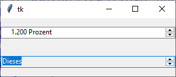

ttk.Spinbox
Bei einer Spinbox handelt es sich um ein Widget, bei dem man aus einer Menge an Werten oder einem Bereich an Fließkommazahlen auswählen kann. Es stehen Knöpfe fürs Auf- und Abwärtsscrollen neben dem Editorfeld (ttk.Entry) bereit. Grundsätzlich werden Methoden von ttk.Entry unterstützt. Da man im Eingabefeld nicht nur Werte auslesen, sondern auch eingeben kann, werden die Methoden zur Validierung von ttk.Entry in der Spinbox übernommen.
ttk.Spinbox erzeugen
sb = ttk.Spinbox(parent, Optionen)
Spinbox kennt die Optionen:
| Optionsname | Beschreibung |
|---|---|
| command | Callback, die aufgerufen wird, wenn auf die Pfeile geklickt wird (Wert muss sich dabei nicht ändern) |
| format | Für Fließkommazahlen ein String wie
'%a.bf': Hier steht 'a' für die gesamte Breite und 'b' für die
Anzahl an Nachkommastellen. Auch, wenn die Dokumentation nicht darauf eingeht:
Man kann weiteren Text anhängen, wie beispielsweise: '%10.2f Prozent' |
| from_ | Minimaler Wert für Fließkommazahlen |
| increment | Numerische Änderung, die beim Drücken der Auf- und Abwärtspfeile ausgeführt werden soll |
| textvariable | Variable, die den Inhalt der Spinbox enthält |
| to | Maximaler Wert für Fließkommazahlen |
| values | Liste von erlaubten Werten, dieses überschreibt to,from,increment |
| wrap | Wenn tk.YES, dann wird nach dem letzten Wert von
Vorne begonnen. |
| validate, validatecommand | Siehe Entry-Widget für Details |
ttk.Spinbox kennt die Standardoptionen: class_, cursor, placeholder, state, style, takefocus und xscrollcommand
Das folgende Programm zeigt zwei Spinboxes. Eine stellt Fließkommazahlen von 1.0 bis 1.3 bereit, die besonders formatiert werden. Die andere Spinbox lässt aus Wörter auswählen, wobei kein freier Text eingegeben werden kann:
import tkinter as tk
from tkinter import ttk
from tkinter import font
class A(tk.Tk):
def __init__(self):
super().__init__()
self.geometry('300x100')
self._createWidgets()
def _createWidgets(self):
self.var1 = tk.StringVar(value=1.1)
spin1 = ttk.Spinbox(self, format='%10.3f Prozent',
from_=1.00000, to=1.300000, increment=0.1,
textvariable=self.var1,
wrap=tk.YES,
command=self.spinNotify1)
spin1.pack(expand=tk.YES, fill=tk.X)
values2 = ('Dieses', 'ist', 'ein', 'String')
self.var2 = tk.StringVar(value=values2[0])
spin2 = ttk.Spinbox(self,
values=values2,
textvariable=self.var2,
state='readonly',
command=self.spinNotify2)
spin2.pack(expand=tk.YES, fill=tk.X)
def spinNotify1(self, event=None):
print('SpinNotify1:', self.var1.get())
def spinNotify2(self, event=None):
print('SpinNotify2:', self.var2.get())
if __name__ == '__main__':
window = A()
window.mainloop()Spinbox-Methoden
| Methode | Parameter | Rückgabewert | Beschreibung |
|---|---|---|---|
| sb.get() | - | Wert | Der aktuelle Spinbox-Wert wird zurückgegeben |
| sb.set(value) | Wert | - | Setzt den Wert der Spinbox aus value. Anders als in der Doku
(siehe unten) angegeben, wird die Formatangabe nicht berücksichtigt. |
Es werden ferner die Standardmethoden:
- Konfigurationsmethoden:
cget(…)undconfigure(…) - Sonstige Methoden:
identify(…),instate(…)undstate(…)
unterstützt.
Virtuelle Ereignisse
<<Increment>>, wenn der Hoch-Knopf gedrückt wird, <<Decrement>>, wenn der Runter-Knopf gedrückt wird.